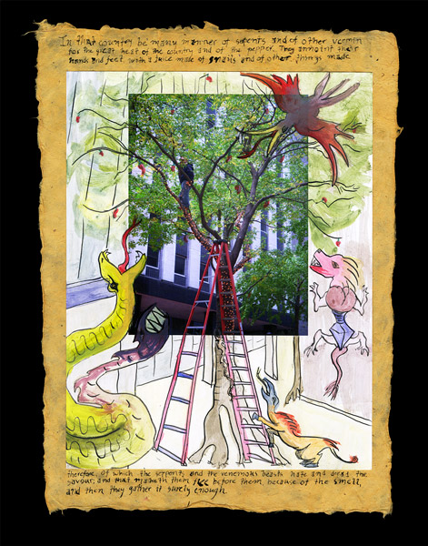
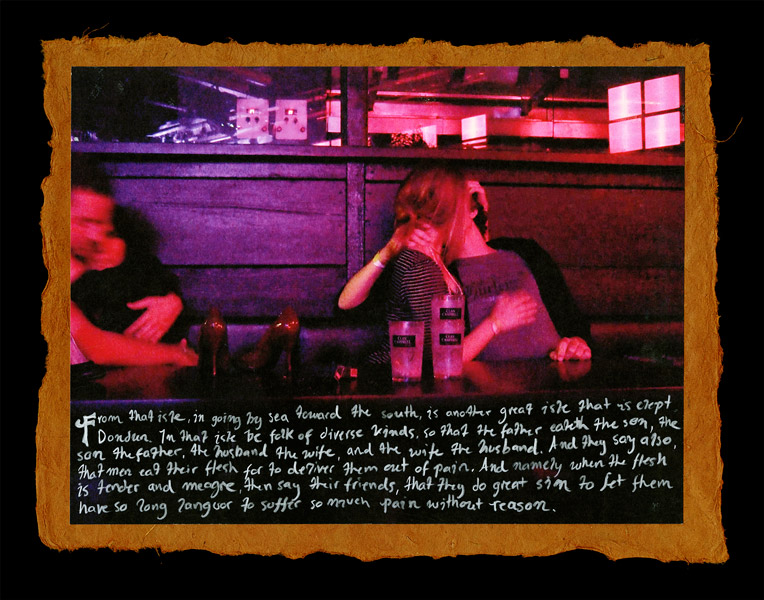
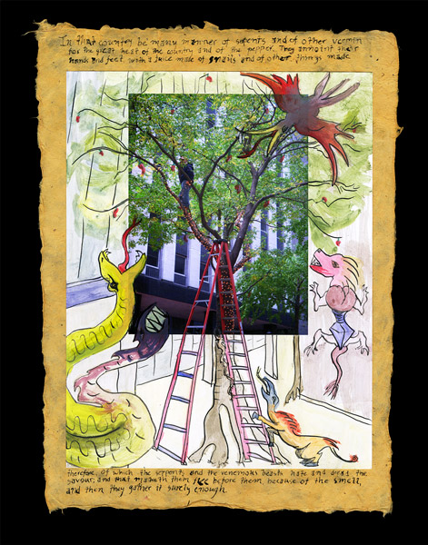
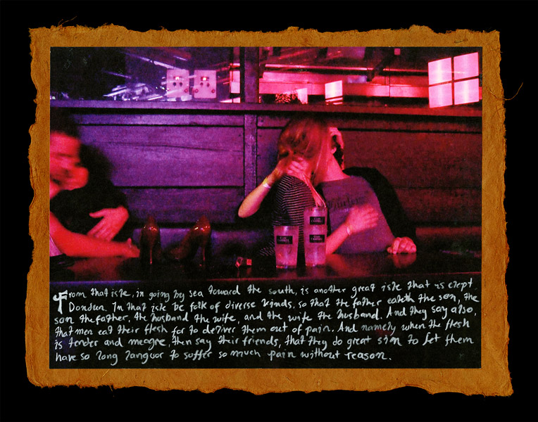

Dark Age
2008
In the 13th century the implausible figure of Sir John Mandeville published a book entitled The Travels of John Mandeville. In the book, he details his supposed travels from Europe to the far East, including vivid decriptions of the grotesque monsters that he found there. It was wildly popular.
Using the frame of the photograph as a representation of the known, I impose my, and Mandeville's, imaginations in the margins.
 


